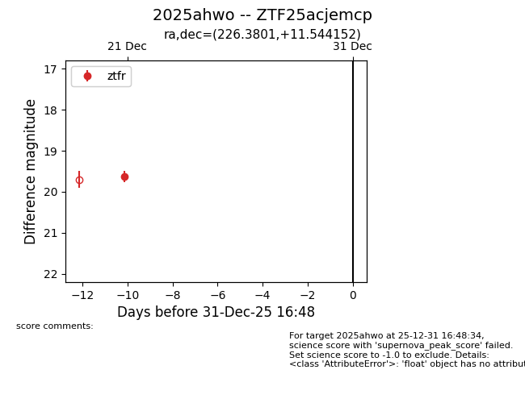
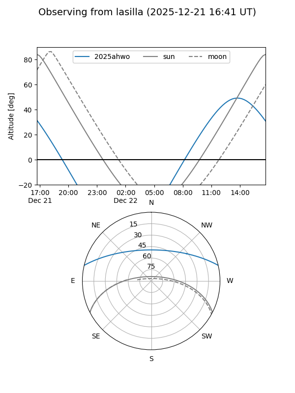
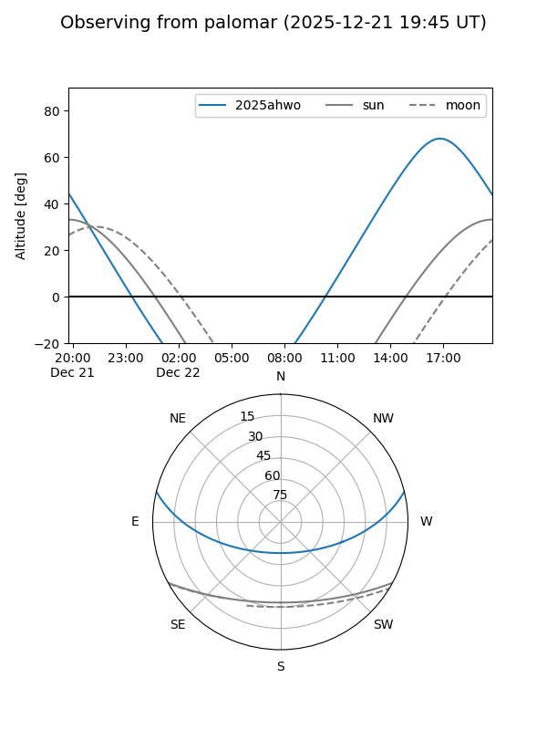

2025ahwo
Target 2025ahwo at 2025-12-24 16:17
Aliases and brokers:
FINK: fink-portal.org/ZTF25acjemcp
Lasair: lasair-ztf.lsst.ac.uk/objects/ZTF25acjemcp
ALeRCE: alerce.online/object/ZTF25acjemcp
TNS: wis-tns.org/object/2025ahwo
YSE: ziggy.ucolick.org/yse/transient_detail/2025ahwo
alt names
ZTF25acjemcp (ztf,fink_ztf)
2025ahwo (tns,yse)
Coordinates:
equatorial (ra, dec) = 226.3801,+11.54415
equatorial (HMS+DMS) = 15:05:31.22,+11:32:38.95
galactic (l, b) = (13.1737,+54.90650)
Flags:
Photometry:
last ztfr=19.62
1 ztfr detections
Lightcurve

Visibility


Additional plots